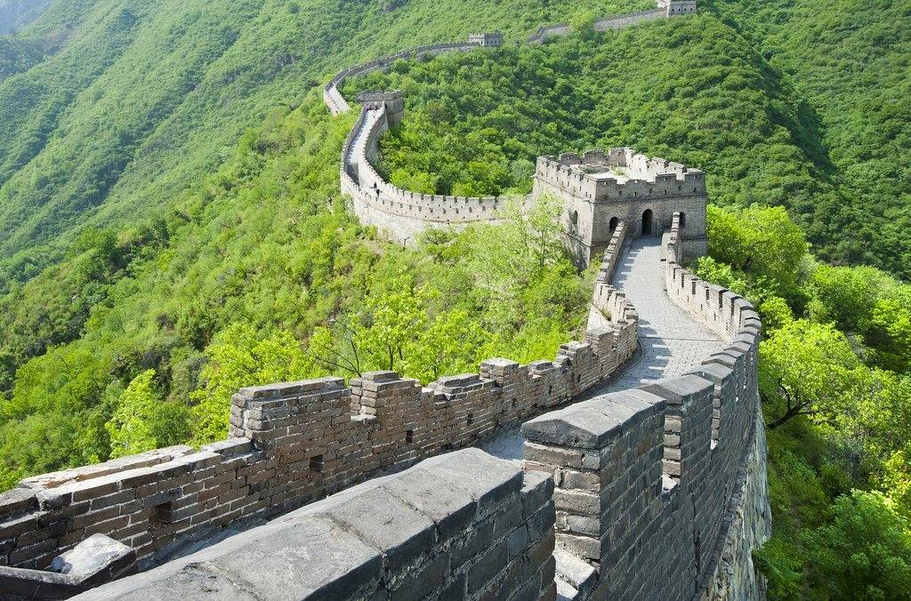
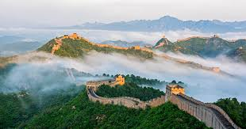
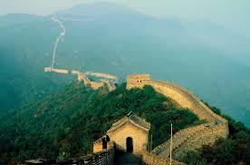
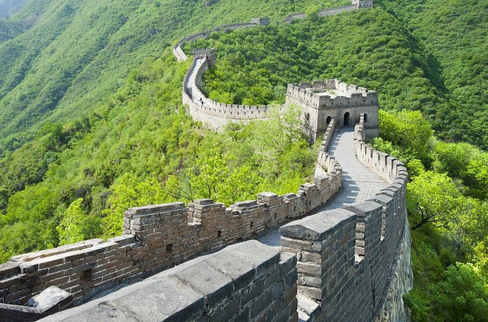
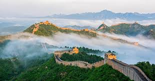
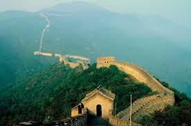

The Great Wall of China, an awe-inspiring feat of ancient engineering, stretches across the vast landscapes of northern China, winding through deserts, mountains, and grasslands. Originally constructed over two millennia ago, the Wall was built by various dynasties—most notably the Ming—to defend against invasions and control trade routes like the Silk Road. Spanning over 21,000 kilometers, it features towering stone walls, watchtowers, and fortresses, all reflecting the resilience and strategic brilliance of the Chinese civilization. Beyond its military role, the Wall symbolizes unity, strength, and enduring cultural legacy. Today, as a UNESCO World Heritage site, it remains one of the world’s most iconic landmarks, drawing millions who come to witness its monumental presence and rich history
➤ History
The Great Wall of China has its origins as early as the 7th century BCE, when regional kingdoms built defensive walls during the Warring States Period. After China was unified in the 3rd century BCE, Emperor Qin Shi Huang connected and expanded these walls to protect the new empire from northern invasions. This early version was primarily built from rammed earth and wood. Over the centuries, successive dynasties reinforced and extended the Wall, with the Ming Dynasty (1368–1644) constructing the most well-known sections using stone and brick. These additions stretched thousands of kilometers and featured watchtowers, fortresses, and signaling systems, serving both military and administrative functions. As warfare evolved and trade routes shifted, the Wall gradually lost its strategic importance. Many parts fell into ruin, but its legacy endured as a symbol of Chinese strength and unity. In modern times, it has become a global icon and UNESCO World Heritage site, drawing millions who marvel at its scale and history.
➤ Geography
The one thing most people “know” about the Great Wall of China—that it is one of the only man-made structures visible from space—is not actually true. Since the wall looks a lot like the stone and soil that surround it, it is difficult to discern with the human eye even from low Earth orbit, and is difficult to make out in most orbital photos. However, this does not detract from the wonder of this astounding ancient structure. For millennia, Chinese leaders instituted wall-building projects to protect the land from northern, nomadic invaders. One surviving section of such an ancient wall, in the Shandong province, is made of hard-packed soil called “rammed earth” and is estimated to be 2,500 years old. For centuries during the Warring States Period, before China was unified into one nation, such walls defended the borders.
➤ Architecture
The Great Wall of China is renowned for its vast and varied construction, which includes walls, watchtowers, fortresses, and barracks, built using stone, brick, tamped earth, and wood across different terrains. The architecture of the Wall reflects a fusion of military strategy and engineering skill developed over centuries. While early sections were more rudimentary, the Ming Dynasty introduced more sophisticated and durable techniques, especially in the mountainous regions near Beijing. The most iconic parts of the Wall—such as those at Badaling, Mutianyu, and Jinshanling—feature crenellated parapets, arched gateways, and signal towers used for sending smoke or fire messages across great distances. Beyond its imposing walls, the structure also included intricate features like drainage systems, beacon towers, and inner pathways designed to support long-term military defense and movement of troops. Watchtowers were placed at regular intervals for surveillance and communication, while garrison towns nearby provided housing and supplies for soldiers. The Great Wall followed the natural contours of the land, adapting to deserts, rivers, and mountains, which made it both a functional and visually striking structure.
➤ Tourism
Tourism on the Great Wall of China plays a vital role in showcasing the country's rich history and architectural brilliance to the world. Each year, millions of visitors from across the globe come to explore its most famous sections, such as Badaling, Mutianyu, and Jinshanling—areas that are well-preserved and accessible, offering breathtaking views and a chance to walk along ancient pathways. These popular segments are equipped with visitor centers, cable cars, and guided tours that provide cultural and historical context. While some parts of the Wall are heavily restored for tourism, others remain rugged and remote, attracting adventurous hikers seeking a more authentic experience. As a UNESCO World Heritage Site, the Wall not only boosts China's tourism economy but also inspires awe and appreciation for the ingenuity and perseverance of past civilizations.

 




